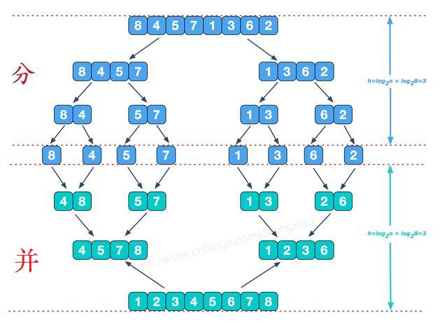
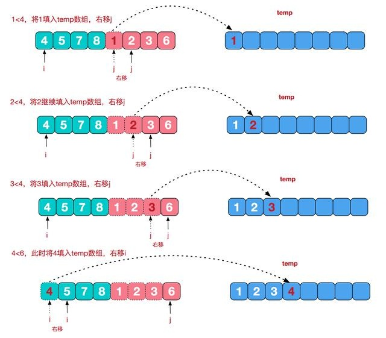

解决问题的关键在于能抓住主要矛盾，删繁就简，特别是对于复杂的问题，可以考虑将其分割成一些规模较小的相同问题，以便各个击破，分而治之。
1.1 基本概念
在计算机科学中，分治法是一种很重要的算法。字面上的解释是“分而治之”，就是把一个复杂的问题分成两个或更多的相同或相似的子问题，再把子问题分成更小的子问题……直到最后子问题可以简单的直接求解，原问题的解即子问题的解的合并。
任何一个可以用计算机求解的问题所需的计算时间都与其规模有关。问题的规模越小，越容易直接求解，解题所需的计算时间也越少。例如，对于n个元素的排序问题，当n=1时，不需任何计算。n=2时，只要作一次比较即可排好序。n=3时只要作3次比较即可…。而当n较大时，问题就不那么容易处理了。要想直接解决一个规模较大的问题，有时是相当困难的。
1.2 基本策略
对于一个规模为n的问题，若该问题可以容易地解决（比如说规模n较小）则直接解决，否则将其分解为k个规模较小的子问题。这些子问题互相独立且与原问题形式相同，递归地解这些子问题，然后将各子问题的解合并得到原问题的解，这种算法设计策略叫做分治法。
如果原问题可分割成k个子问题，1<k≤n,且这些子问题都可解并可利用这些子问题的解求出原问题的解，那么这种分治法就是可行的。由分治法产生的子问题往往是原问题的较小模式，这就为使用递归技术提供了方便。在这种情况下，反复应用分治手段，可以使子问题与原问题类型一致而其规模却不断缩小，最终使子问题缩小到很容易直接求出其解，这自然导致递归过程的产生。分治与递归像一对孪生兄弟，经常同时应用在算法设计之中，并由此产生许多高效算法。
1.3 适用的情况
（1)该问题的规模缩小到一定的程度就可以容易地解决；
（2)该问题可以分解为若干个规模较小的相同问题，即该问题具有最优子结构性质；
（3)利用该问题分解出的子问题的解可以合并为该问题的解；
（4)该问题所分解出的各个子问题是相互独立的，即子问题之间不包含公共的子子问题。
第一特征是绝大多数问题都可以满足的，因为问题的计算复杂性一般是随着问题规模的增加而增加。
第二特征是应用分治法的前提它也是大多数问题可以满足的，此特征反映了递归思想的应用。
第三特征是关键，能否利用分治法完全取决于问题是否具有第三特征，如果具备了第一和第二特征，而不具备第三特征，则可以考虑用贪心法或动态规划法。
第四特征涉及到分治法的效率，如果各子问题是不独立的，则分治法要做许多不必要的工作，重复地解公共的子问题，此时虽然可用分治法，但一般用动态规划法较好。
1.4 基本步骤
step1 分解：将原问题分解为若干个规模较小，相互独立，与原问题形式相同的子问题；
step2 解决：若子问题规模较小而容易被解决则直接解，否则递归地解各个子问题；
step3 合并：将各个子问题的解合并为原问题的解。
它的一般的算法设计模式如下：
Divide-and-Conquer(P) if |P|≤n0 then return(ADHOC(P))
将P分解为较小的子问题 P1 ,P2 ,...,Pk
for i←1 to k do yi ← Divide-and-Conquer(Pi) △递归解决Pi T ← MERGE(y1,y2,...,yk) △合并子问题 return(T)
其中|P|表示问题P的规模，n0为一阈值，表示当问题P的规模不超过n0时，问题已容易直接解出，不必再继续分解。ADHOC(P)是该分治法中的基本子算法，用于直接解小规模的问题P，因此，当P的规模不超过n0时直接用算法ADHOC(P)求解。算法MERGE(y1,y2,...,yk)是该分治法中的合并子算法，用于将P的子问题P1 ,P2 ,...,Pk的相应的解y1,y2,...,yk合并为P的解。
1.5 复杂性分析
一个分治法将规模为n的问题分成k个规模为n／m的子问题去解。设分解阀值n0=1，且adhoc解规模为1的问题耗费1个单位时间，再设将原问题分解为k个子问题以及用merge将k个子问题的解合并为原问题的解需用f(n)个单位时间。用T(n)表示该分治法解规模为|P|=n的问题所需的计算时间，则有：
T（n）= k T(n/m)+f(n)
通过迭代法求得方程的解：
递归方程及其解只给出n等于m的方幂时T(n)的值，但是如果认为T(n)足够平滑，那么由n等于m的方幂时T(n)的值可以估计T(n)的增长速度。通常假定T(n)是单调上升的，从而当mi≤n<mi+1时，T(mi)≤T(n)<T(mi+1)。
1.6 依据分治法设计程序时的思维过程
实际上就是类似于数学归纳法，找到解决本问题的求解方程公式，然后根据方程公式设计递归程序。
(1) 一定是先找到最小问题规模时的求解方法
(2) 然后考虑随着问题规模增大时的求解方法
(3) 找到求解的递归函数式后（各种规模或因子），设计递归程序即可。
（1）二分搜索
（2）大整数乘法
（3）Strassen矩阵乘法
（4）棋盘覆盖
（5）合并排序
（6）快速排序
（7）线性时间选择
（8）最接近点对问题
（9）循环赛日程表
（10）汉诺塔
对于排序，如果排序的数据元素成千上万，是不是很头痛，但如果是只有两个元素，那就简单了，只需比较一下，需要时交换一下位置就行了，对于一个元素，本身就是有序的了。合并呢，对于有序的数组，合并起来也很简单。这种排序的就是归并排序，是分治法的典型应用。
归并排序（merge sort）是建立在归并操作上的一种有效的排序算法。该算法是分治法（Divide and Conquer）的一个非常典型的应用。将已有序的子序列合并，得到完全有序的序列；即先使每个子序列有序，再使子序列段间有序。若将两个有序表合并成一个有序表，称为2-路归并（2-way or binary merges sort）。
归并排序在1945年由冯·诺伊曼首次提出。
2-路归并的基本思路就是将数组分成二组A，B，如果这二组组内的数据都是有序的，那么就可以很方便的将这二组数据进行排序。如何让这二组组内数据有序？
可以将A，B组各自再分成二组。依次类推，当分出来的小组只有一个数据时，可以认为这个小组组内已经达到了有序，然后再合并相邻的二个小组就可以了。这样通过先递归的分解数列，再合并数列就完成了归并排序。
归并排序的效率是比较高的，设数列长为N，将数列分开成小数列一共要logN步，每步都是一个合并有序数列的过程，时间复杂度可以记为O(N)，故一共为O(N*logN)。因为归并排序每次都是在相邻的数据中进行操作，所以归并排序在O(N*logN)的几种排序方法（快速排序，归并排序，希尔排序，堆排序）也是效率比较高的。
归并排序的实现分为递归实现与非递归(迭代)实现。递归实现的归并排序是算法设计中分治策略的典型应用，我们将一个大问题分割成小问题分别解决，然后用所有小问题的答案来解决整个大问题。非递归(迭代)实现的归并排序首先进行是两两归并，然后四四归并，然后是八八归并，一直下去直到归并了整个数组。
可以看到这种结构很像一棵完全二叉树，分阶段可以理解为就是递归拆分子序列的过程，递归深度为log2n。
1.2 合并相邻有序子序列
再来看看并阶段，我们需要将两个已经有序的子序列合并成一个有序序列，比如上图中的最后一次合并，要将[4,5,7,8]和[1,2,3,6]两个已经有序的子序列，合并为最终序列[1,2,3,4,5,6,7,8]，来看下实现步骤。
申请空间，使其大小为两个已经排序序列之和，该空间用来存放合并后的序列；
设定两个指针，最初位置分别为两个已经排序序列的起始位置；
比较两个指针所指向的元素，选择相对小的元素放入到合并空间，并移动指针到下一位置；temp[index++] = A[i] <= A[j] ? A[i++] : A[j++];
重复步骤3直到某一指针到达序列尾；
将另一序列剩下的所有元素直接复制到合并序列尾；
代码：
#include <stdio.h>
#include <stdlib.h>
#include <limits.h>
// 分类 -------------- 内部比较排序
// 数据结构 ---------- 数组
// 最差时间复杂度 ---- O(nlogn)
// 最优时间复杂度 ---- O(nlogn)
// 平均时间复杂度 ---- O(nlogn)
// 所需辅助空间 ------ O(n)
// 稳定性 ------------ 稳定
// 合并两个已排好序的数组A[left...mid]和A[mid+1...right]
void Merge(int A[], int left, int mid, int right)
{
int len = right - left + 1;
int *temp = new int[len]; // 辅助空间O(n)
int index = 0; // 辅助数组的下标
int i = left; // 前一数组的起始元素
int j = mid + 1; // 后一数组的起始元素
while (i <= mid && j <= right) // 左右相等长度部分
{
temp[index++] = A[i] <= A[j] ? A[i++] : A[j++];
} // 带等号保证归并排序的稳定性
while (i <= mid) // 左边超长部分
temp[index++] = A[i++];
while (j <= right) // 右边超长部分
temp[index++] = A[j++];
for (int k = 0; k < len; k++) // 临时空间到数据A[]
A[left++] = temp[k];
}
// 递归实现的归并排序(自顶向下)
void MergeSortRecursion(int A[], int left, int right)
{
if (left == right) // 当待排序的序列长度为1时，递归开始回溯，进行merge操作
return;
int mid = (left + right) / 2;
MergeSortRecursion(A, left, mid);
MergeSortRecursion(A, mid + 1, right);
Merge(A, left, mid, right);
}
// 非递归(迭代)实现的归并排序(自底向上)
void MergeSortIteration(int A[], int len)
{
int left, mid, right; // 子数组索引,前一个为A[left...mid]，
// 后一个子数组为A[mid+1...right]
for (int i = 1; i < len; i *= 2) // 子数组的大小i初始为1，每轮翻倍
{
left = 0;
while (left + i < len) // 后一个子数组存在(需要归并)
{
mid = left + i - 1;
right = mid+i < len ? mid+i : len-1;// 后一个子数组大小可能不够
Merge(A, left, mid, right);
left = right + 1; // 前一个子数组索引向后移动
}
}
}
int main()
{
int A1[] = { 6, 5, 3, 1, 8, 7, 2, 4 }; // 从小到大归并排序
int A2[] = { 6, 5, 3, 1, 8, 7, 2, 4 };
int n1 = sizeof(A1) / sizeof(int);
int n2 = sizeof(A2) / sizeof(int);
MergeSortRecursion(A1, 0, n1 - 1); // 递归实现
MergeSortIteration(A2, n2); // 非递归实现
printf("递归实现的归并排序结果：");
for (int i = 0; i < n1; i++)
{
printf("%d ", A1[i]);
}
printf("\n");
printf("非递归实现的归并排序结果：");
for (i = 0; i < n2; i++)
{
printf("%d ", A2[i]);
}
printf("\n");
system("pause");
return 0;
}